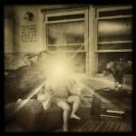
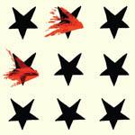
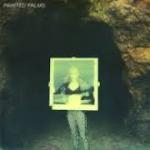

Music Reviews
-

Thee Silver Mt. Zion Memorial Orchestra Fuck Off Get Free We Pour Light on Everything
Politically-fuelled Godspeed You! Black Emperor side-project Thee Silver Mt. Zion return with their 7th album, their noisiest yet.
Stephen Wragg reviews... -

Pontiak INNOCENCE
INNOCENCE, the tenth album from sibling rock trio Pontiak, is an entertaining thirty-two minutes of rock derivations that benefit from high energy.
Sean Caldwell reviews... -
Infinity Frequencies Computer Decay
"When computers sleep, they dream." - Infinity Frequencies.
Michael Iovino reviews... -

Cashmere Cat Wedding Bells
Norwegian DJ prodigy Cashmere Cat twiddles the knobs like nobody's business in his newest EP.
Luiza Lodder jams out to... -

New Dreams Ltd. Initiation Tape: Isle of Avalon Edition
Behind New Dreams Ltd., is Ramona Huntley, the Portlander responsible for the acclaimed album Floral Shoppe, underneath her other moniker Macintosh Plus. How does this album compare?
Michael iovino reviews... -

Hospitality Trouble
The Brooklyn trio's latest concentrates on trying disparate stylistic choices at the expense of diminishing their once-brilliant lyrical wit and shimmering melodic allure.
Juan Edgardo Rodríguez reviews... -

The Hidden Cameras Age
The Toronto music collective's sixth effort doesn't match the range and energy of their previous works.
Carlos Villarreal reviews... -

Damien Jurado Brothers and Sisters of the Eternal Son
Damian Jurado carries on where 2012’s Maraqopa left off, showcasing his two decades in the folk game.
Carlos Villarreal reviews... -

Painted Palms Forever
Debut album of summery psych pop from San Fran duo.
David John Wood reviews... -

Mogwai Rave Tapes
For Mogwai’s eighth album, Rave Tapes finds the Scottish post-rockers continuing to modernize while creating soundtracks for movies that need to be made.
Sean Caldwell reviews...